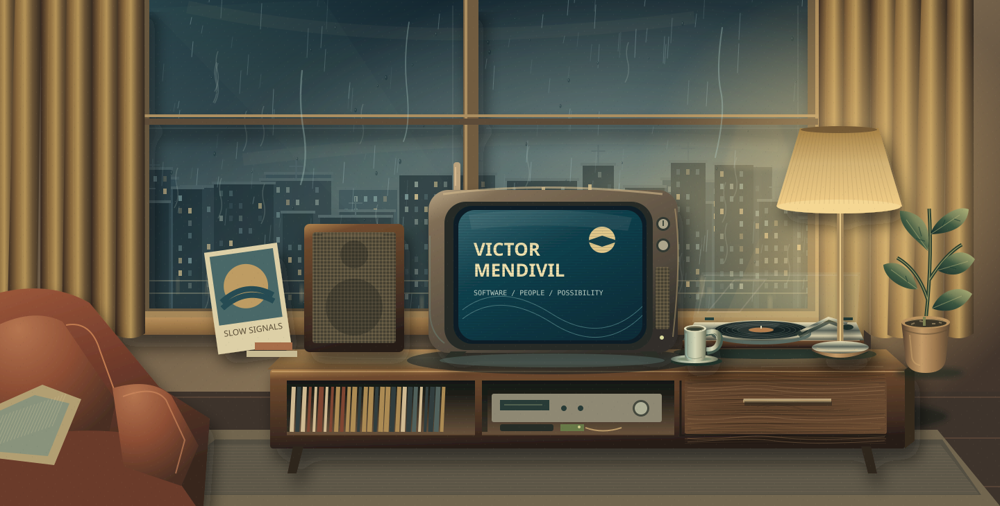

Rain outside. A little room to think.
About · personal broadcastAbout selected
A seat by the window.
I’m Victor, a software developer and problem solver. This is a quiet place to get to know the work—and the curiosity behind it.

I’m Victor, a software developer and problem solver. This is a quiet place to get to know the work—and the curiosity behind it.